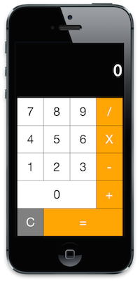
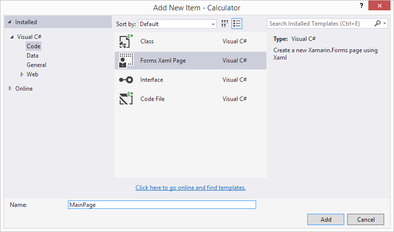

Exercise 1: Create a XAML-based version of Calculator
Duration
30 minutes
Goals
This exercise will take an existing Xamarin.Forms application to display and process a Calculator and convert the UI to be XAML instead of code.
Assets
This exercise includes a starter project in the Part 01 Resources folder. Make sure you have this folder available before starting the exercise.
Challenge
This exercise takes an existing Calculator application which is using C# code to create the UI and generates applications which look like:
|  |  |
 |
Your goal will be to remove all the code which creates the UI and replace it with a XAML page to create the same exact UI. Feel free to use the above picture to replicate the UI, here's the basic structure along with a color map (each B is a Button).
- The root Grid's
BackgroundColoris set toBlack. - All the columns and rows are star-sized, with the first row being 2X as you can see from the red guidelines.
- The
RowSpacingandColumnSpacingis set to "1" to provide the black border around the buttons. - The
BorderRadiusfor all the buttons is set to "0" to make them square on all the platforms. - The
FontSizeis set to "36" for all the elements except theLabelwhich is using "48"
Here are the basic steps you will go through:
- Add a new XAML ContentPage to the project.
- Add the same control definition, using the existing code solution as an example, to the XAML page.
- Utilize the new XAML ContentPage instead of the code page.
If you have worked with XAML before, or find it to be relatively intuitive so far, then try to take the existing code definitions and replicate them in XAML using the above information as a guide - it's helpful to build and run periodically to check your progress. If XAML is unfamiliar, then you can follow along with the steps provided below.
Steps
Open the Starter Solution
- Open the Calculator.sln solution in the Content/Exercises/XAML/Part 01 Resources/Lab.Start folder in Visual Studio (Windows) or Xamarin Studio (Mac).
- This is a standard Xamarin.Forms application with a Portable Class Library for the shared UI and logic, and a platform-specific project for iOS, Windows Phone and Android.
- Go ahead and build and run the application to make sure it is all working before we begin making changes. As mentioned earlier, it displays a calculator and allows you to perform simple calculations.
Rename the Existing Page
We are going to replace the existing MainPage with our new XAML version, so go ahead and rename the existing page to OldMainPage
- Open the MainPage.cs file.
- Right-Click on the
MainPageclass and select Refactor > Rename, or use ⌘R on OS X or CTRL+R+R on Visual Studio while the cursor is on the class name. - Rename the file as well if your refactoring did not change it.
- Compile the app and make sure it builds - you don't need to run it, just make sure nothing is broken before you continue.
Add a new XAML-based Content Page to the project
Next, let's add a new XAML page where we will put the new UI definition.
- Add a new file to the PCL project - select the Forms > Forms ContentPage Xaml template in Xamarin Studio, and Forms Xaml Page in Visual Studio as shown below.
- Name the file MainPage as shown above.


Create the User Interface
Review what you are creating by looking at the screen shots at the start of this exercise.
- Open the MainPage.xaml file.
- Add a
Gridas the first child tag in theContentPage, if there is an existingLabeljust replace it with theGrid. - Set the following properties on the
Grid:Padding: "5,0"RowSpacing: "1"ColumnSpacing: "1"BackgroundColor: "Black"
ContentPage.Content tags, or leave them in if you prefer to be explicit. Since the default content property for the ContentPage is the content, the result will be the same. Depending on the IDE you used to create the template, the tags may be present or absent.
- Add
RowDefinitionandColumnDefinitionelements to create a 4x6 grid - we want 4 columns and 6 rows, with the first row being 2X the size of all the others. All of the columns should be equally sized. - Here's the first row and column definition to show you the syntax:
<Grid ...>
<Grid.RowDefinitions>
<RowDefinition Height="2*" />
</Grid.RowDefinitions>
<Grid.ColumnDefinitions>
<ColumnDefinition Width="*" />
</Grid.ColumnDefinitions>
</Grid>
- Add a
Labelinto the first row, have it span all four columns by setting theGrid.ColumnSpanattached property, and set the following properties:Font: "Bold,48"BackgroundColor: "Black"Text: "0"TextColor: "White"XAlign: "End"YAlign: "Center"LineBreakMode: "NoWrap"
-
Add all the buttons into the UI, placing them into each row and column as appropriate. Use the color map to set the
BackgroundColorandTextColorbased on the app screenshot. In addition, on each button set theFontto "36" and theBorderRadiusto "0".
Use the new MainPage
- Open the App.cs source file.
- In the
GetMainPagemethod, create and return a newMainPageobject - this is your XAML page. This should replace the existingOldMainPagewhich is there now. - Run the application and make sure it displays the calculator UI - it won't be functional yet since we've not wired up any behavior, but it should look identical to how we started.
Summary
In this exercise, you have taken an existing Xamarin.Forms application that defined the UI in C# code and converted it to use XAML for the UI defintion. You utilized attached properties, the property-element syntax and moved a large chunk of code into a declarative XML file.
There is a completed version of the lab exercise in the resources folder.